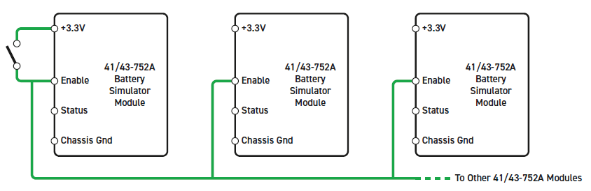
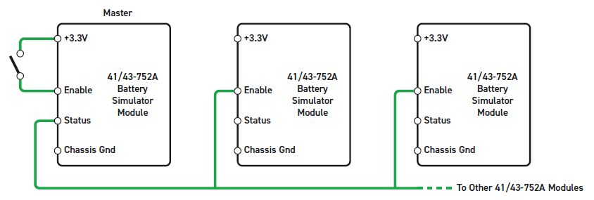
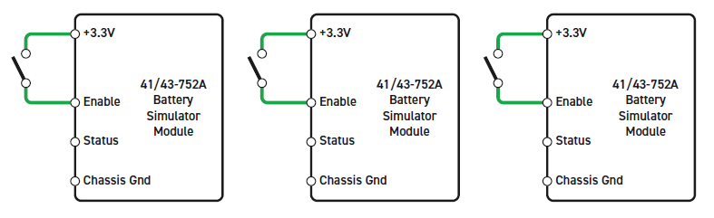
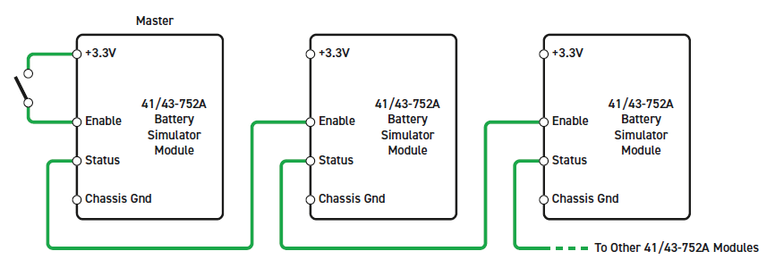
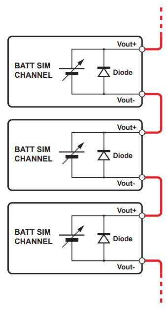
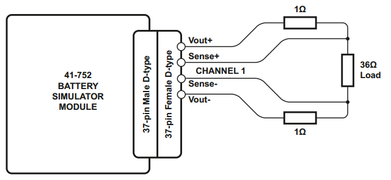
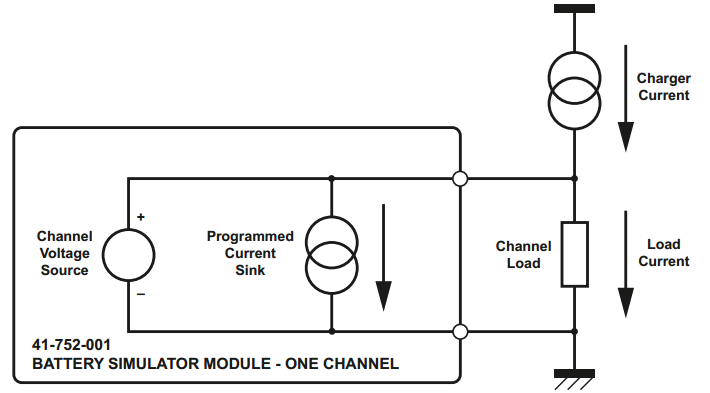
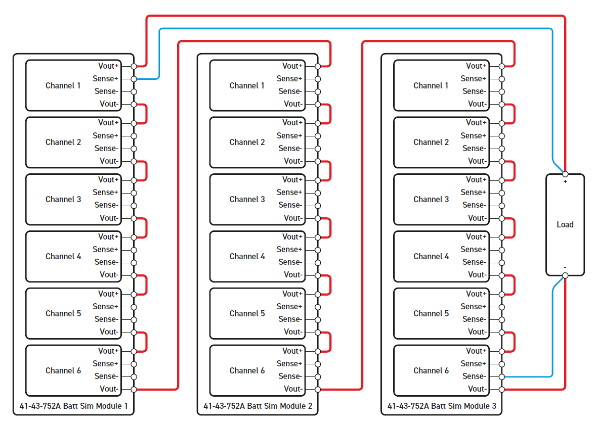

IO99X Usage Notes
IO99X Usage Notes — Usage information about the I/O module
Global Enable
High output voltages can be generated when multiple modules are connected in series. An Interlock feature prevents the generation of any output voltage unless the "Hardware Input Enable" (Pin 17) is raised to 3.3 V (Input is 5 V tolerant). This can be done by connecting this pin to 3.3V (Pin 16). Another option is to use the "Hardware Output Status" (Pin 18) from another module or an external signal. This pin is active high when the enable input is raised to 3.3 V and a reset has occurred (the module is reset when the model is loaded to the target or before the model is started). The interlock can be used in various ways as shown below:




Channel Enabling
Each channel can be independently enabled using the corresponding enable port when the Show input enable ports checkbox is activated. Enabling a channel during runtime can take several milliseconds. The time required increases when enabling multiple channels at the same time. Using this feature with small sample rates may result in CPU overloads. If a channel is disabled, it is disconnected from the load. To prevent damage, each channel has a diode on every output which can withstand currents up to 3 A. It is recommended to not turn off channels connected in series, and to apply a low voltage instead. Otherwise, a negative voltage will appear across the channel output because of the diode.

Sense Input Lines
Each channel provides two input Sense Lines allowing the battery module to make a correction for any voltage drop in the connecting wires. These lines should to be connected to the load for optimal performance.

Current Sinking
Current Sinking can be used when simulating a battery connected to a charger. Sink current can be used to limit the current that a Charger Current can deliver to the load. Refer to the OEM Manual for further information.
![[Note]](images/note.png) | Note |
|---|---|
The output voltage must be greater than 0.5 V for the current sink to work correctly. |

Cell Stacking
All channels are individually isolated from each other and from chassis ground. This allows channels to be connected in series. Therefore, connect the positive output with a negative output of another channel as shown below:

The sense input can either be left unconnected or connected to the load as shown above. It is recommended that all channels connected in series should be turned on. If a channel is off, a diode between the outputs is used to protect the channel from damage. The diode can withstand currents of up to 3 A.
Module Startup
If the Initial channel enable values are set to one, the initial voltage and current sink values are applied to the outputs. These values are set before the model starts. However, before these values are applied, a reset of the I/O module is triggered in the initialization phase, which disables all the outputs. The duration of the reset is approximately 500 ms.